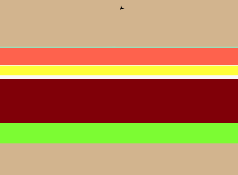

Home
Portfolio
About Me
This is my Portfolio Page!

1.1.9 -- Make Your Own Burger

For this project we made a program that draws a burger with varying ingredients based on user inputs.
The user is able to customize what they want on their burger such as lettuce, meat, sauce.
The program changes colors and draws different shapes based on what ingredients the user wants.
Pikachu's Berry Collector

For this project we made a program that has you move around turtles trying to catch other turtles without coming into contact into other turtles.
The user uses keyboard inputs in order to move around the Pikachu to collect berries and avoid the pokeballs.
Filler

Filler

Filler

Filler